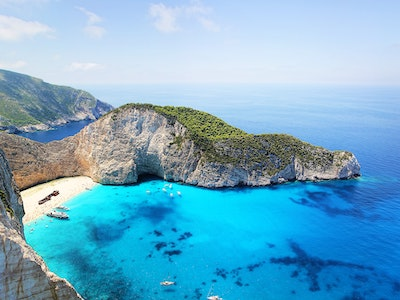
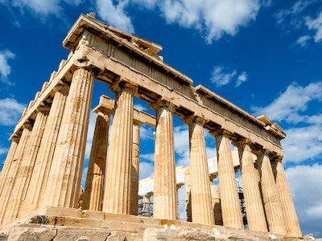
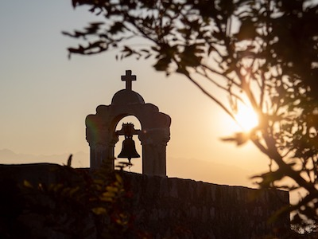

Weather

Greece has a Mediterranean climate with plenty of sunshine, mild temperatures and a
limited amount of
rainfall.
Due to the country's geographical position, its rugged relief and its distribution between the mainland
and the sea, there is great variation in Greece's climate.
In summer, the dry hot days are cooled by seasonal winds called the meltemi, while
mountainous regions
have generally lower temperatures.
The winters are mild in lowland areas, with a minimum amount of snow and ice, yet,
mountains are usually
snow-covered. Moreover, a common phenomenon is the occurrence of different climactic conditions during
the same season (for instance, mild heat in coastal areas and cool temperatures in mountainous regions).
Civilisation

Little is known to date to the Paleolithic Era in Greece, but quite a lot is known
about the Neolithic
Period that followed (approx. 7th – 4th Millennium B.C.) and its civilisation, which is
traced mainly in
areas that included Thessaly and Macedonia. Civilisations with impressive achievements developed during
the Bronze Age (approx. 3000 – 1150 B.C.) in the Northeastern Aegean, the Cyclades (its
trademark being
the large-sized marble figurines), Crete and the Greek Mainland. The civilisations that flourished
during the 2nd Millennium in the two regions, known as the Minoan and the
Mycenean Periods respectively,
are considered to be the first of the great civilisations in Greece.
Architectural remains (e.g. palaces), as well as pottery work, stone carving (vessels, sealstones),
metallurgy (vessels, weapons), jewelry making and paintings (murals) were impressive and representative
works of these civilisations.
During the historical years, the civilisations of the Geometric Period (9th – 8th
Century B.C.) and the
Archaic Period (7th – 6th Century B.C.) were considered to be the forerunners of the
culture found in
the Classical Period (5th – 4th Century B.C.). The Classical works of
art, with their ideal proportions
and beauty, expressed the philosophical ideals of their times, and were the model of the European
Renaissance Era of the 15th Century A.D. Greek civilisation developed during the subsequent
Hellenistic
Years (3rd – 1st Century B.C.) and the Roman Years (1st Century B.C. – 3rd
Century A.D.), within the
framework of large kingdoms and an empire respectively.
Greek civilisation again flourished -within the framework of an empire- during the Byzantine
Years
(early, middle and late - 4th – 15th Century A.D.), while civilisation in more recent times was marked
by the Ottoman occupation and the emergence of the new Hellenic State after the Greek War of
Independence (1821-1830).
A visit to archaeological sites, museums and monuments throughout the country provides a vivid picture
of the civilisations in Greece and their accomplishments in arts and technology from the Prehistoric Era
to modern times.
Religious

There is a direct link between religion as a cultural phenomenon and tourism. Religion in terms of
tourism is based on a clear cultural bedrock of tradition. Greeks and foreign visitors are stunned by
Greece’s majestic churches
of the Byzantine era, countless rural churches and metochia (monastery
grounds and gardens), sacred places of pilgrimage and religious sites, all of which inspire awe. Whether
they are here for religious purposes or purely for pleasure, visitors to mainland Greece and its islands
are amazed by the countless number of sites of religious devotion and major references to the divine.
Visitors have the chance to see buildings and religious sites
related to various dogmas and religions,
which all co-exist in a state of ongoing dialogue and thus highlight the rare historic and cultural
mosaic of Greece.
Some of Greece’s most important religious centres include the monastic community of Mount
Athos, the
impressive monasteries of Meteora
the Cave of the Apocalypse and the Monastery of Saint John Theologos
on Patmos, the places where the Apostle
Paul preached, and the pilgrim destinations of the Madonna
(Panayia) of Tinos, the Panayia Soumela, the Panayia Ekatontapiliani, etc.